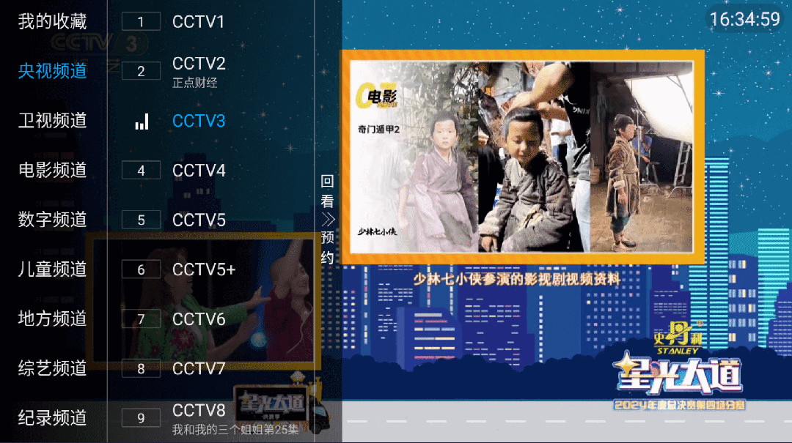

✯ 这是一个国内可直连的iptv直播源分享项目 ✯
🔄永久免费 完全开源 不含广告 直播源支持IPv4/IPv6双栈访问🔄
本项目免费提供最新开源的IPTV直播源,每6小时自动更新。收录国内外数千个高清直播频道源,包括央视、卫视、港澳台、海外频道。完全免费无广告,提供M3U/TXT格式,支持IPv4/IPv6双栈访问,支持EPG节目单及台标,可用于所有苹果、安卓4.0+系统的电视盒子、手机、和任何电脑等设备。
请注意:直播源全部来源于网络公开资源，本项目不存储任何直播源媒体的内容，所有直播源均由第三方提供，本项目不对其内容负责，不保证直播源的可用性、稳定性和合法性。为维持网站开销，页面上有些自动广告链接，上面有标注，请自行甄别。


如不愿折腾开源项目，推荐直接下载第三方开发的软件 直播电视APP 使用，手机电视盒子都兼容，没有广告，完全免费。
直播电视APP 下载地址：https://izbds.com 野草助手安装码：0024
软件内包含大量直播源，包含港澳台频道，速度流畅，并且每日多次更新。
📡 自动扫描直播源 IPTV4
IPTV4直播源由部署在服务器上的程序自动扫描验证，确保直播源的时效性和稳定性。
本次更新时间: 2025-08-24 18:49:49
| 名称 | 网址 | 快速复制 |
|---|---|---|
| TXT 格式直播源 | https://live.zbds.org/tv/iptv4.txt | |
| M3U 格式直播源（已带台标和EPG） | https://live.zbds.org/tv/iptv4.m3u |
如果你打不开github域名，请使用加速地址访问，加速地址也失效了？那就在找一个
https://gh-proxy.com/raw.githubusercontent.com/vbskycn/iptv/refs/heads/master/tv/iptv4.txt
https://gh-proxy.com/raw.githubusercontent.com/vbskycn/iptv/refs/heads/master/tv/iptv4.m3u
📡 自动扫描直播源 IPTV6
IPTV6直播源专为IPv6网络优化，由部署在服务器上的程序自动扫描验证，确保直播源的时效和稳定
本次更新时间: 2025-08-24 18:49:49
有ipv6环境的强烈推荐这个列表，高速稳定
近期由于不可力抗原因，大部分ipv6源都关门了，大玩家各玩各的。造成网友们不能一网通吃，请大家静待花开吧！！如有开门的大玩家，本仓库第一时间更新上来给大家分享
| 名称 | 网址 | 快速复制 |
|---|---|---|
| TXT 格式直播源 | https://live.zbds.org/tv/iptv6.txt | |
| M3U 格式直播源（已带台标和EPG） | https://live.zbds.org/tv/iptv6.m3u |
有地方的宽带运营商已经污染本项目域名了，如果你打开失败，请使用加速地址访问
https://gh-proxy.com/raw.githubusercontent.com/vbskycn/iptv/refs/heads/master/tv/iptv6.txt
https://gh-proxy.com/raw.githubusercontent.com/vbskycn/iptv/refs/heads/master/tv/iptv6.m3u
💽DEMO

🛠️工具
我们提供多种直播源相关工具，帮助您更好地使用IPTV直播源：
直播源格式转换器
纯前端直播源格式转换器（开源在本仓库tools目录）
📱 直播电视APP
如果你不愿意折腾，这里有折腾好的可直接使用的直播电视软件
最新稳定版
- 下载链接： https://izbds.com （包含港澳台）
📅 更新
- 2025.8.1 更新一些直播源
- 2025.5.20 不提供epg服务
- 2025.1.11 优化页面
- 2024.12.13 跟着节奏继续优化
- 2024.10.18 优化测试有效源代码
- 2024.9.9 直播源失效速度太快，新添加deibian服务器，每日三次更新
- 2024.6.22 新增 IPTV4/IPTV6 自动更新源
💬 联系
📝 免责声明
-
本项目仅作为技术研究用途，用于学习和交流。所有内容均收集自互联网公开链接，严禁用于任何商业用途，包括但不限于商业直播、商业推广等。
-
本项目不存储任何的流媒体内容，所有直播源均由第三方提供，本项目不对其内容负责，不保证直播源的可用性、稳定性和合法性，所有的法律责任与后果应由使用者自行承担。
-
本项目采用开源协议发布，您可以 Fork 本项目，但引用本项目内容到其他仓库的情况，务必要遵守开源协议，必须注明来源。
-
本项目不保证直播频道的有效性，直播内容可能受直播服务提供商因素影响而失效。
-
本项目由社区维护，所有文件均托管在 GitHub仓库 且自动构建，由项目发起人公益维护，欢迎 Star 本项目或点击 Issues 反馈您的问题。
-
本项目维护者保留随时修改或终止项目的权利，且最终解释权归项目维护者所有。
-
使用本项目即表示您已阅读并同意本免责声明，如不同意本声明，请立即停止使用本项目，本项目保留随时更新免责声明的权利